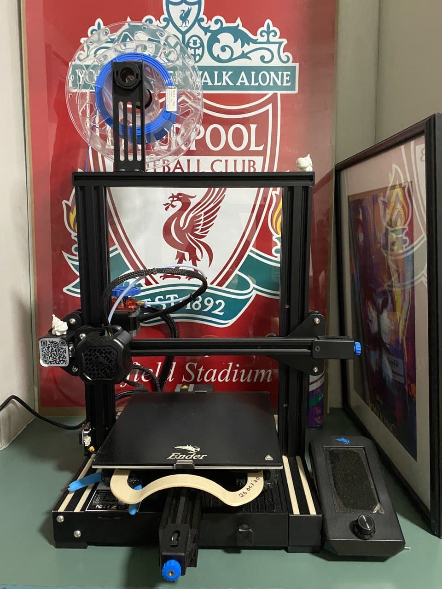

Impactful Leadership
Programme
The 'Impactful Leadership' programme is catered to 30-50 students every calender year. Selected by the Student Leadership Development Office.
This programme enhance my capability as a leader, developing and understanding multiple leadership methods. Application of such exemplary leadership
to drive teams that I am leading.
Individual coaching by industrial mentors' also provide support to my experimental learning on leadership. Group coaching session provide exponential
growth in understanding and providing valuable lessons from other leaders in different teams.
Odin Project
Odin project is a Full stack developer course. Organised by full-time User-Interface, User-Experience and software developers.
I have picked up some knowledge in HTML language within the course. I have a strong designing background, naturally I find design and web development, front-end experience is truely amazing.
This course enhancement of skillset in different programming language, increase my critical thinking and design capabilities. Moving forward into this course, I will be expose to more computational language like Java, C++, Ruby and Python.
3D Printing

Last year during my Internship, I was exposed tremenously by my mentor on 3D printing.
As an intern in a Research & Development Corporate Lab, many of my projects used 3D printing considerations while designing, cheaper alternative for prototypes.
My interest spark with 3D printing, knowing the amount of designs and prototypes I could do at a cheap cost. I even bought a 3D printer by Ender.
With this interest, I took up workshops on Coursea to enhance my Solidwork skills and a Course on Fusion 360 which was known for they designing platform for 3D-printing.
I understood more about the 3D printing industry and what it has to offer for future developments.
ANSYS
During my internship, I was given an opportunity to learn ANSYS software.
ANSYS provide a one stop full package of modelling, assembly and analysis. The software provide accurate results on specific requirements.
I understood the basic knowledge of Finite Element Analysis (FEM) within the platform. Computational Fluid Dynamic (CFD) analysis would be a bonus to learn in the future.